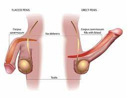

Erectile dysfunction

CAUSES
Causes of Erectile dysfunction
- Vascular disease: Blood supply to the penis can become blocked or narrowed as a result of vascular disease such as atherosclerosis (hardening of the arteries).
- Neurological disorders (such as multiple sclerosis): Nerves that send impulses to the penis can become damaged from stroke, diabetes, or other causes.
- Psychological states: These include stress, depression, lack of stimulus from the brain and performance anxiety.
- Trauma: An injury could contribute to symptoms of ED.
SYMPTOMS
Depending on the cause, balanitis might also cause:
- soreness, pain, and irritation around the glans.
- tight, shiny foreskin.
- itching on the skin of the glans
unusual penile discharge.
- sores on the head of the penis.
- a thick, white discharge under the foreskin (smegma)
a foul smell from the penis.
- painful urination.
- swollen groin lymph nodes.
DIAGNOSIS
After your physical examination and discussion, your doctor may then order any one of the following tests to further diagnose your condition:
- Complete blood count (CBC): This is a set of blood tests that, among other things, can detect the presence of anemia. Anemia is caused by a low red blood cell count and can cause fatigue, which in turn can cause ED.
-
Liver and kidney function tests: These blood tests may indicate whether ED may be due to your kidneys or liver functioning improperly.
-
Lipid profile: This blood test measures the level of lipids (fats), like cholesterol. High levels may indicate atherosclerosis (hardening of the arteries), which can affect blood circulation in the penis.
Thyroid function test: One of the thyroid hormones' functions is to regulate the production of sex hormones, and a deficiency in these hormones may contribute to or cause ED.
-
Blood hormone studies: Testosterone and/or prolactin levels in the blood may be measured to see if abnormalities in either of these sex hormones are present.
-
Urinalysis: Analysis of urine can provide a wealth of information, including information on protein, sugar and testosterone levels. Abnormal measurements of these substances can indicate diabetes, kidney disease or a testosterone deficiency, all which can cause ED.
-
Duplex ultrasound: This is perhaps the best test for evaluating ED. An ultrasound uses high-frequency sound waves to take "pictures" of the body's tissues. For people with ED, an ultrasound may be used to evaluate blood flow and check for signs of a venous leak, atherosclerosis (hardening of arteries) or tissue scarring. This test is performed both while the penis is erect (usually induced by an injection of a drug that stimulates erection) and also while it is soft.
-
Bulbocavernosus reflex: This test evaluates nerve sensation in the penis. During the test, your doctor will squeeze the head of your penis, which should immediately cause your anus to contract. If nerve function is abnormal, there will be a delay in response time.
-
Nocturnal penile tumescence (NPT): This test measures a man's erectile function while he is sleeping. Normally, a man will have five or six erections while asleep. A lack of these erections may indicate there is a problem with nerve function or circulation to the penis. The test uses two methods, the snap gauge method and the strain gauge method. The snap gauge method is performed by wrapping three plastic bands of varying strength around the penis. Erectile function is then measured based on which of the three bands breaks. The strain gauge method works by placing elastic bands around the tip and base of the penis. If the penis becomes erect during the night, the bands stretch, measuring the changes in penile circumference.
-
Penile biothesiometry: This test involves the use of electromagnetic vibration to determine sensitivity and nerve function. A decreased sensitivity to these vibrations may indicate nerve damage.
-
Vasoactive injection: During this test, an erection is produced by injecting special solutions that cause the blood vessels to dilate (enlarge) allowing blood to enter the penis.
-
Dynamic infusion cavernosometry: This test is used for men with ED who have a venous leak. During this test, fluid is pumped into the penis at a predetermined rate. By measuring the rate at which fluid must be pumped to attain a rigid erection, doctors can determine the severity of the venous leak.
-
Cavernosography: Used in conjunction with the dynamic infusion cavernosometry, this test involves injecting a dye into the penis. The penis is then X-rayed so that the venous leak can be seen.
-
Arteriography: This test is given to people who are candidates for vascular reconstructive surgery. A dye is injected into the artery believed to be damaged and X-rays will be taken.
TREATMENTS
ED can be treated in many ways, including:
- Oral medications.
-
Sex therapy.
-
Penile injections.
-
Vacuum devices.
-
Intraurethral medication.
-
Surgery (penile implant).